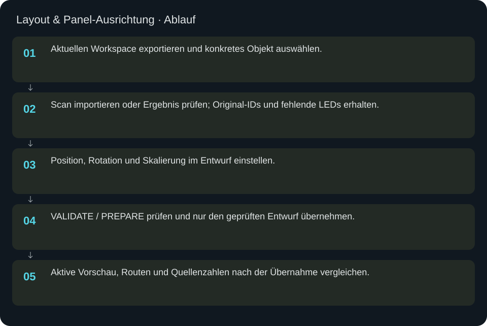
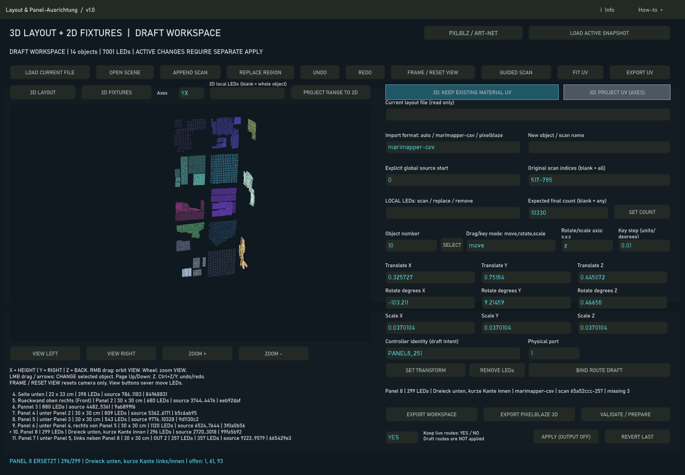

Layout & Panel-Ausrichtung
Objekte importieren, ausrichten und als Entwurf prüfen, bevor das aktive LED-Mapping ersetzt wird.
In welcher Reihenfolge?
- Aktuellen Workspace exportieren und konkretes Objekt auswählen.
- Scan importieren oder Ergebnis prüfen; Original-IDs und fehlende LEDs erhalten.
- Position, Rotation und Skalierung im Entwurf einstellen.
- VALIDATE / PREPARE prüfen und nur den geprüften Entwurf übernehmen.
- Aktive Vorschau, Routen und Quellenzahlen nach der Übernahme vergleichen.


Schritt für Schritt
Beispiel Panel 8
Lokaler Bereich 0–298, erwartete Zahl 299; gemessen sind 296 Punkte. Die IDs 1, 61, 93 bleiben Lücken. Das Dreieck zeigt nach unten, seine kürzere Seite zur Schrankmitte. Objektnummer nicht aus der räumlichen Position erraten: die Objektliste mit Namen und Provenienz prüfen.
Ausrichten
X entspricht Höhe, Y rechts und Z Tiefe. Translation bewegt, Rotation dreht in Grad, Skalierung ändert die Größe. Erst eine Änderung setzen, Vorschau ansehen und gegebenenfalls Undo verwenden. SET TRANSFORM übernimmt die Transformationsfelder; eine Routenbindung ist ein eigener Entwurfsschritt.
Rollback
Vorher exportierten Workspace und .toe-Sicherung aufbewahren. Undo betrifft den Entwurf; nach einer dauerhaften Integration den gesicherten Projekt-/Workspace-Stand nutzen. IDs, Zieloffsets und Controllerbindungen gehören zur Wiederherstellung, nicht nur sichtbare Punkte.
Eingaben & Beispiele
| Feld | Bedeutung | Beispiel |
|---|---|---|
initialfile | Geladene Layoutdatei; Anzeige, nicht direkt bearbeiten. | mappings/<gespeicherte-layoutdatei>.json |
format | Importformat; auto erkennt unterstützte Dateien. | auto |
objectname | Name für neues Objekt oder Scan. | Panel 8 |
sourcestart | Expliziter globaler Quellstart; erst Routen prüfen. | 0 |
scanrange | Originale Scan-IDs für den Import; leer = alle. | 0-298 |
localrange | Lokale IDs des gewählten Objekts für Scan/Ersetzen/Entfernen. | 0-298 |
expectedcount | Erwartete adressierbare Gesamtzahl, nicht Zahl erfolgreicher Messungen. | 299 |
objectno | Objektnummer aus der angezeigten Liste. | 8 |
mode | Maus-/Tastenaktion für das ausgewählte Objekt. | move |
axis | Achse für Rotation oder Skalierung. | z |
step | Schrittweite in Einheiten beziehungsweise Grad. | 0.01 |
controller | Controlleridentität aus der Live-Konfiguration, nicht IP. | PANEL8_251 |
port | Physischer Port, ab 1. | 1 |
preserverouting | Routen bei Übernahme bewusst erhalten; aktuellen Dialoghinweis beachten. | 1 |
tx | Translation: X Höhe, Y rechts, Z Tiefe. | 0 |
ty | Translation: X Höhe, Y rechts, Z Tiefe. | 0 |
tz | Translation: X Höhe, Y rechts, Z Tiefe. | 0 |
rx | Rotation in Grad um die genannte Achse. | 90 |
ry | Rotation in Grad um die genannte Achse. | 90 |
rz | Rotation in Grad um die genannte Achse. | 90 |
sx | Skalierung; 1 erhält die Größe. | 1 |
sy | Skalierung; 1 erhält die Größe. | 1 |
sz | Skalierung; 1 erhält die Größe. | 1 |
Numerische Eingaben verwenden einen Punkt als Dezimaltrennzeichen. IPs, Pfade, Quellstarts und Universen zuerst mit der tatsächlichen Installation vergleichen.
Woran erkenne ich Erfolg?
Die erwartete Ansicht öffnet, Status und Vorschau entsprechen der gewählten Aktion, und es erscheint kein Fehler. Änderungen beim nächsten Laden beziehungsweise im Live-Status erneut lesen. Ein erfolgreicher Bildschirmtest beweist weder physische LED-Ausgabe noch korrekte Kameramessung.
Quellennachweis
Dateipfade im Projekt-Repository; die Onlinehilfe gibt keinen allgemeinen Dateisystemzugriff frei.
pixelblaze_mapper/build_layout_scene_ui.pypixelblaze_mapper/layout_scene_adapter.pypixelblaze_mapper/build_layout_apply.py
Dialog: /project1/layout_scene_editor/ui_panel